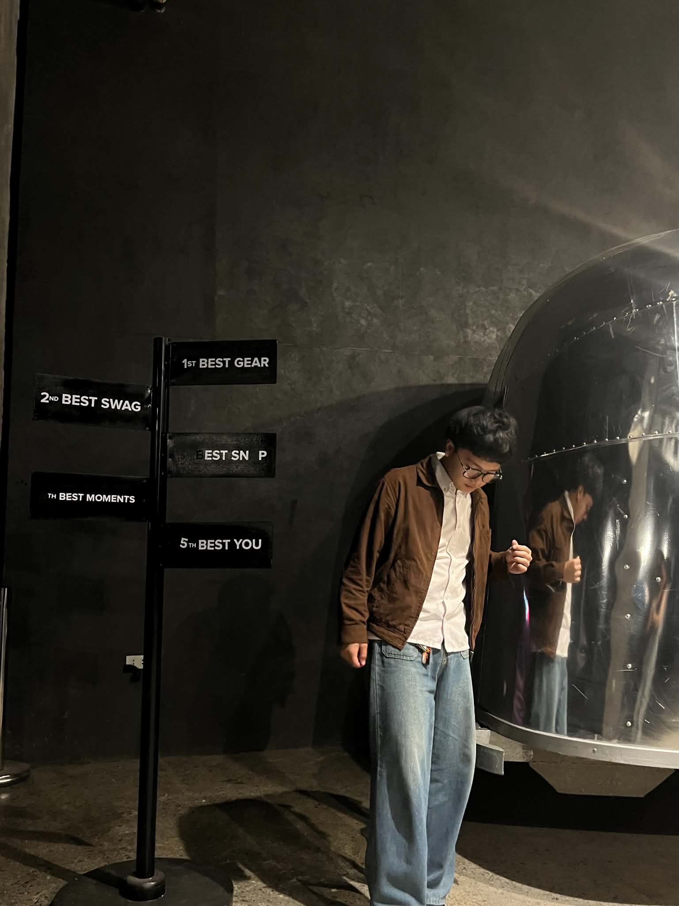
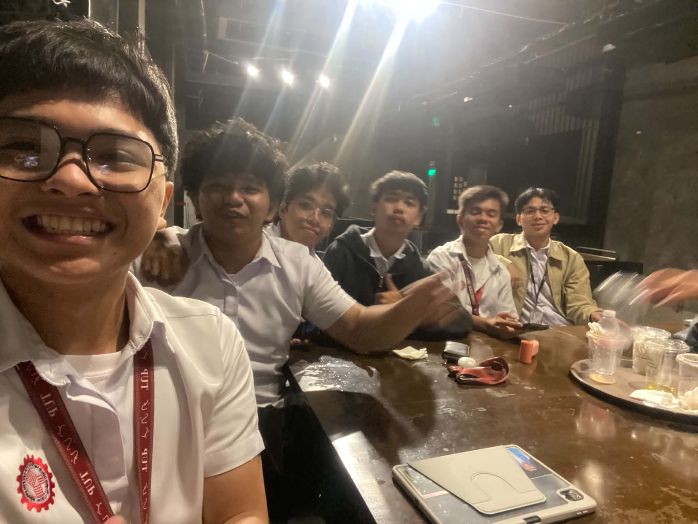
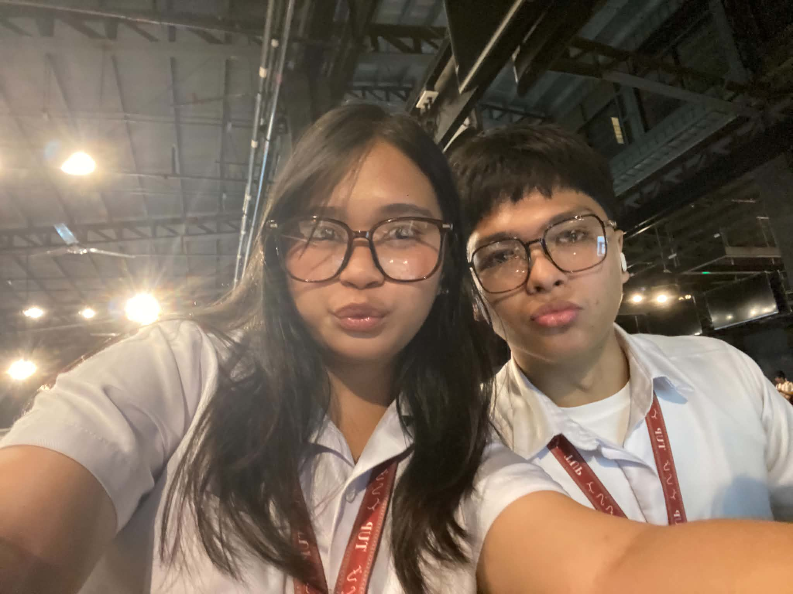

Top 1: Kadiliman Esports Stadium
659-A, Brgy, Manila Real Residences,
1129 Natividad Lopez St, Ermita, Manila,
1000 Metro Manila
Food, Comfort, And Connectivity all in one.
This Esports cafe is located at 659-A, Brgy,
Manila Real Residences, 1129 Natividad Lopez St,
Ermita, Manila, 1000 Metro Manila.
I've been coming here for months and even years
but with different branches and locations, but this
one is the best. The place is very spacious and has
a lot of seating areas, with a very good internet
connection.
The food is also very good, with a lot of options
to choose from. The computers are strong and can
handle demanding tasks. The staff are also very
friendly and accommodating.
Top 2: Cafe Siriusdan
492 Halcon Extension,
Mandaluyong City,
1550 Kalakhang Maynila
When good coffee meets great comfort.
This is one of the places you go to and just
ponder how one's mind came up with such an
artistic idea to create a cultural yet modern cafe.
The place is very spacious and has a lot of seating
areas, with an average internet connection.
The food is also very good, with a lot of options
to choose from, like pasta and pastries, hot meals,
and sweets.
One thing that sets them apart from other coffee
shops is that they have so many unique art pieces
and paintings that you can take pictures with.
This is definitely a place you wouldn't want to
miss out on.
Top 3: WareHouse Coffee
2nd Floor, YOU.suites, 2113 Recto Ave, Sampaloc, Manila, 1008 Metro Manila
When good coffee meets great comfort.
This is a cozy and inviting coffee shop that
offers a perfect blend of quality coffee and
comfortable seating.
The atmosphere is relaxed and ideal for studying
or working. The food options are diverse, with a
focus on fresh and healthy choices.
The staff is knowledgeable and friendly, making
every visit a pleasant experience. I highly
recommend this place to anyone looking for a
great coffee shop with a welcoming vibe.


